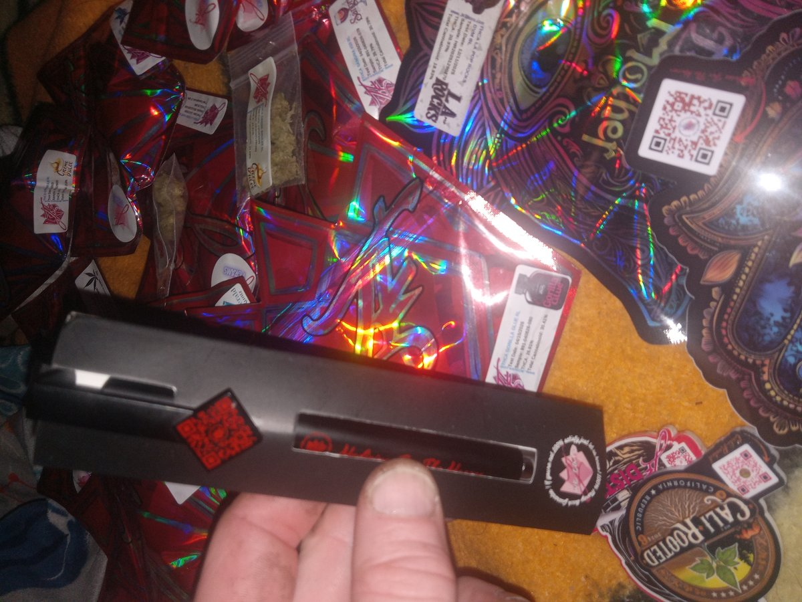
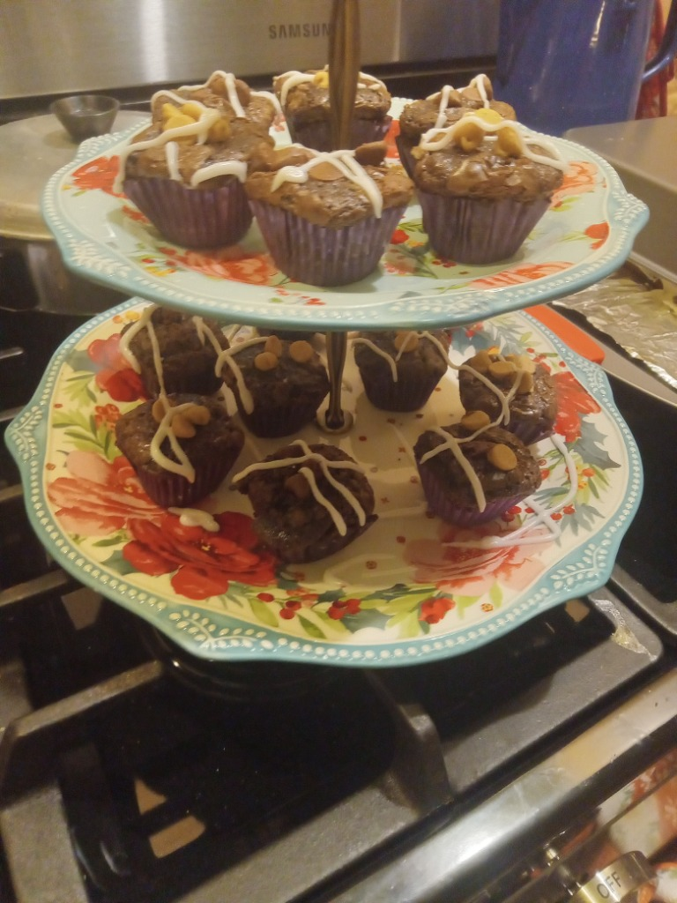

3-Step Crockpot Cannabutter Infusion


This 3-step master protocol converts 100% of raw THCA into bioavailable Delta-9 THC without scorched flavors or destroyed terpenes. By utilizing a water buffer and liquid sunflower lecithin, cannabinoids bind seamlessly to saturated dairy fats for maximum potency.
Precision Decarb
Break high-THCA flower into pea-sized popcorn chunks (do not over-grind to powder). Spread evenly on a parchment-lined baking sheet and seal tightly with aluminum foil to trap volatile terpenes.
- Time: 40 Minutes
- Oven Temp: 240°F Exact
- Conversion: THCA → THC (99%)
- Color Shift: Olive to Golden Brown
Crockpot Lipid Simmer
Add 4 sticks of unsalted clarified butter (or Ghee), 1 cup of water, and 1 tablespoon of liquid sunflower lecithin into the crockpot. Add decarbed flower on LOW setting.
- Setting: LOW / WARM
- Duration: 4 to 6 Hours
- Emulsifier: 1 Tbsp Sunflower Lecithin
- Stir Interval: Every 45-60 Mins
Strain & Solidify
Pour mixture through 4-layer unbleached cheesecloth into a glass bowl. Gently press without squeezing plant chlorophyll. Chill in the refrigerator until butter hardens into an emerald puck.
- Filter: 4x Cheesecloth / Mesh
- Refrigerate: 4 Hours (Overnight)
- Water Separation: Discard bottom water
- Storage: Airtight Glass (3 Mo)